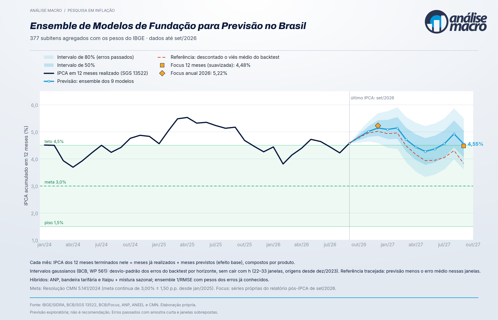

Modelos de Fundação para Previsão no Brasil
Previsão dos 377 subitens do IPCA, agregação com os pesos do IBGE e comparação com o Focus
O paper conta o percurso da pesquisa decisão a decisão, à luz da literatura: a história do IPCA, a dos modelos de fundação, os nove modelos usados e os resultados num walk-forward com datas de divulgação do IBGE e de publicação do Focus auditadas. Comentários e críticas são muito bem-vindos: escreva para vitorwilher@analisemacro.com.br.

Resumo
O IPCA é um índice agregado de 377 subitens. Este trabalho testa se nove modelos de fundação de séries temporais, usados sem treino, conseguem prever esses subitens bem o bastante para que a soma ponderada compita com o Focus, e conta o percurso da pesquisa decisão a decisão, à luz da literatura. Os modelos preveem os 377 subitens; as previsões são agregadas com os pesos do IBGE, ajustadas para combustíveis (ANP) e energia (bandeira e créditos de Itaipu), misturadas à média sazonal e combinadas num ensemble ponderado pelo inverso do RMSE passado. Num walk-forward com informação datada, o ensemble tem erro igual ao do Focus no mês seguinte (razão de RMSE 1,009) e de 0,911 a 0,998 do erro do Focus de 2 a 12 meses à frente, sem diferença significativa. Intervalos gaussianos construídos com os erros já conhecidos em cada data ficam perto da cobertura nominal, mas a correção de viés em tempo real piora a previsão. Com dados até set/2026, o ensemble projeta o IPCA em 12 meses em 5,14% em dez/2026 e 4,55% em set/2027, acima do teto da meta.
Palavras-chave: inflação; modelos de fundação; previsão desagregada; Focus; IPCA.
Estrutura do paper
- Introdução
- O IPCA: um índice agregado — breve história, como o índice é construído e por que prever pelos componentes
- Modelos de fundação para séries temporais — das redes recorrentes à atenção, o que é um modelo de fundação, a chegada às séries temporais e a previsão probabilística
- Os nove modelos usados — Chronos-2 (isolado e com aprendizado entre séries), TimesFM 2.5, TimesFM 3.0, TiRex, Moirai 2.0, Toto, Granite TTM r2 e TimeGPT-1
- Dados e desenho — SIDRA/IBGE (tabela 7060, jan/2020 a set/2026) e Focus/BCB por vintage
- O percurso da pesquisa — modelos puros, ganho da desagregação, diagnóstico do erro, informação institucional (combustíveis e energia), combinação, auditoria das datas e medida da incerteza
- Resultados — IPCA do mês, onde o erro sobra e incerteza
- Previsão atual
- Limitações e Conclusão
Como citar
@unpublished{wilher_2026_ipca_desagregado,
author = {Wilher, Vitor},
title = {Ensemble de Modelos de Funda\c{c}\~ao para Previs\~ao
da Infla\c{c}\~ao no Brasil},
note = {Working paper, vers\~ao 2.0},
year = {2026},
month = {nov},
url = {https://vitorwilher.github.io/research/ipca-desagregado.html}
}Veja também
- 🛠️ Ficha técnica do projeto: IPCA Desagregado — projeto
- 📊 Dashboard ao vivo: analisemacro.shinyapps.io/ipca-desagregado
- 📄 Paper online (versão mais recente): analisemacro.shinyapps.io/ipca-desagregado/paper.pdf
Dados: SIDRA/IBGE (tabela 7060) e API Olinda de expectativas do BCB (Focus). O código é mantido em repositório privado da Análise Macro.